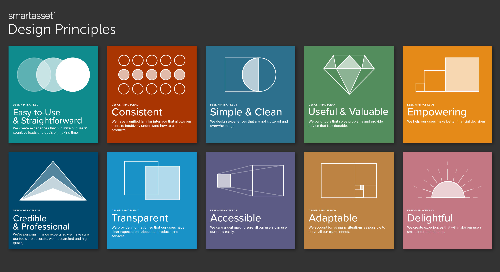

Formalizing the Design Function
Establishing a formal design system to improve design efficiency
Project Timeline: 12 weeks
My Role: UX Lead
Team: Michael, Sarah, Julia, and Markus
Tools: Figma
Before formalizing the design system, our design efforts lacked a central point of reference, with components and templates scattered across various projects. As a result, these design elements were often outdated or inaccessible. Consequently, the design process became burdensome and inefficient. To address these challenges, we needed to establish processes and guidelines that would significantly enhance the team’s efficiency, increase impact, and improve stakeholder buy-in.
Goal: Establish a formal design system to improve design efficiency
Optimizing the design function was a multi-phased process regularly informed by stakeholder feedback, internal learnings, and industry best practices. In order to formalize the design system, we focused on 8 key areas of focuses:
As a team, we engaged in brainstorming and crafted a set of design principles that we believed would effectively guide the design decisions and aesthetics of the system. By adhering to these principles, we prioritize consistency, usability, and a seamless user experience.
A well-defined typography system ensures visual coherence and enhances readability across various interfaces.
Fortunately, minimal effort was required to formalize our typography (typefaces, font sizes, font weights, and other typographic styles) within our new system.
Having a well-defined color scheme and an extensive library of icons contributes to maintaining a consistent visual identity and facilitates effective communication of meaning, hierarchy, and usability within interfaces.
To ensure compliance with accessibility standards, I engaged a branding designer who thoroughly reviewed and made necessary updates to our colors and UI elements. This process revealed an important insight: our primary call-to-action (CTA) colors lacked sufficient contrast. Additionally, the designer created custom iconography to enhance our visual branding initiatives.

Within our team, we developed a collection of UI elements and modular components that could be reused and combined to streamline the process of building interfaces. This comprehensive library encompassed buttons, forms, navigation menus, and other frequently used interface elements. Additionally, we adopted an 8-point grid system to ensure consistent alignment and spacing in our designs.
In addition, we created extensive documentation that detailed the usage, specifications, and guidelines for implementing the design system. This documentation served as a valuable resource for designers, developers, and stakeholders, ensuring consistent application of the system. Furthermore, we focused on developing a library of downloadable assets, templates, style guides, and other resources that would be readily available and accessible organization-wide.

Success! In Q1 2023, we introduced the new design system to the Product and Tech team, and the response was highly positive and enthusiastic.
With my guidance, the UX team achieved success in establishing the design system, effectively formalizing the design practice at SmartAsset. This accomplishment not only fostered greater coherence and consistency in our experiences but also enhanced the speed and scope of our design work by improving its accessibility.